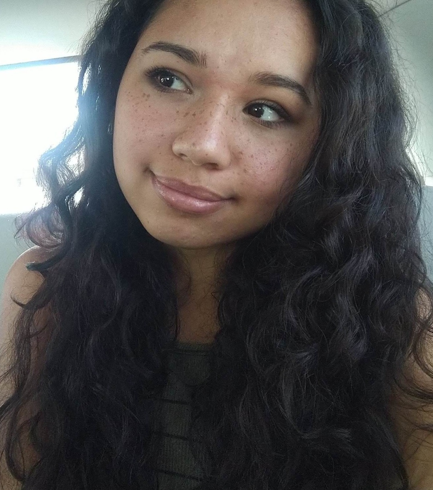

‚ãÜHello there, I'm Madina!‚ãÜüçÄ
I’m a nature lover who fell in love with photography the moment I got my first beginner DSLR camera back in elementary school. Since then, my camera has been my constant companion. I simply can’t put it down! From beautiful landscapes to candid portraits every subject holds a unique story and beauty that inspires me. As a painter I see photography as another way to create art and capture those tiny moments that make life special whether that’s a bumble bee lost in a flower or a beautiful smile. I have a vision, and I would love to hear yours so together we can create images that reflect your style in a way that feels personal and authentic. I’m all about making every session relaxed and enjoyable, where you can be yourself without worrying about stiff poses or fake smiles. The best photos come from real moments and genuine laughter, and that’s exactly what I aim to capture!